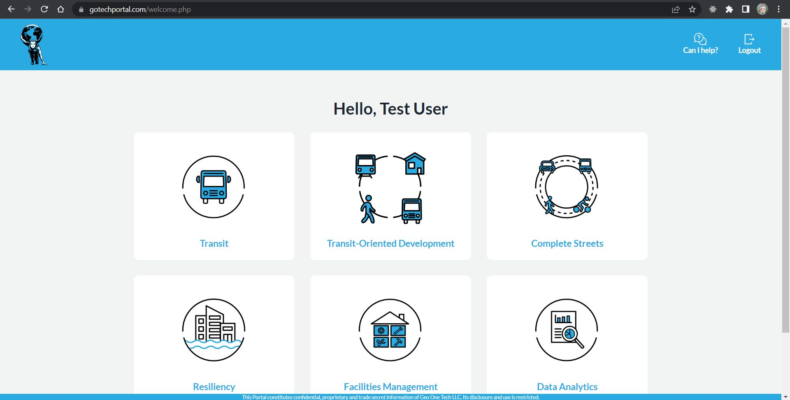
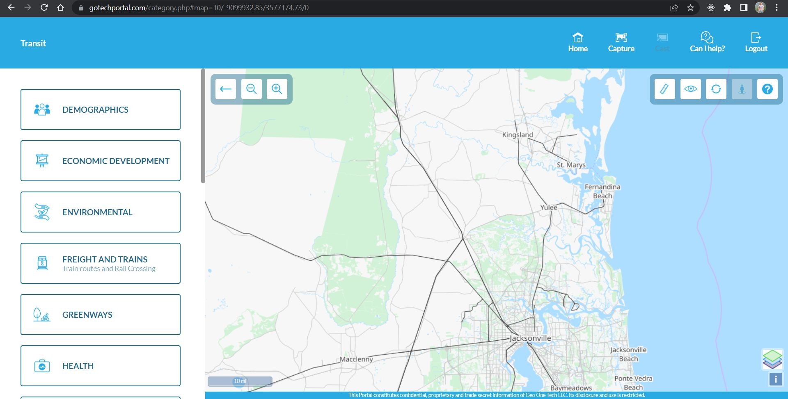
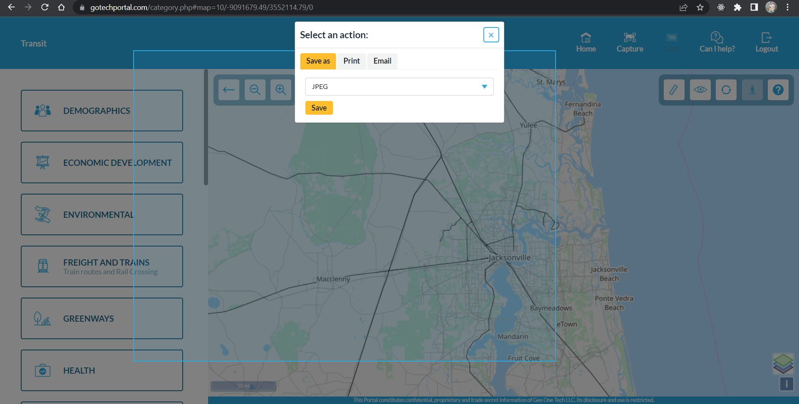
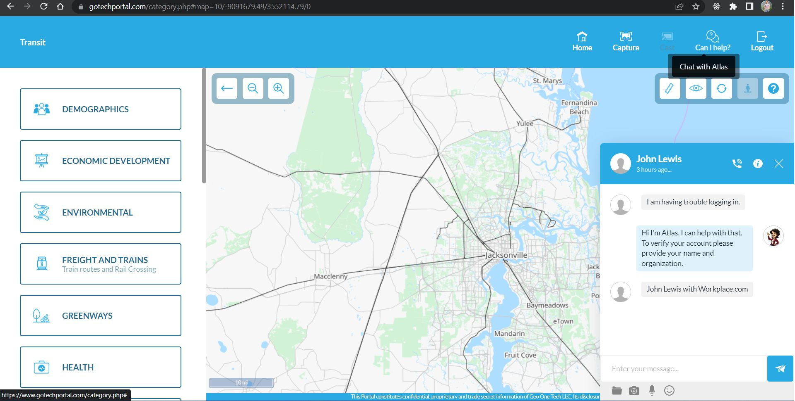
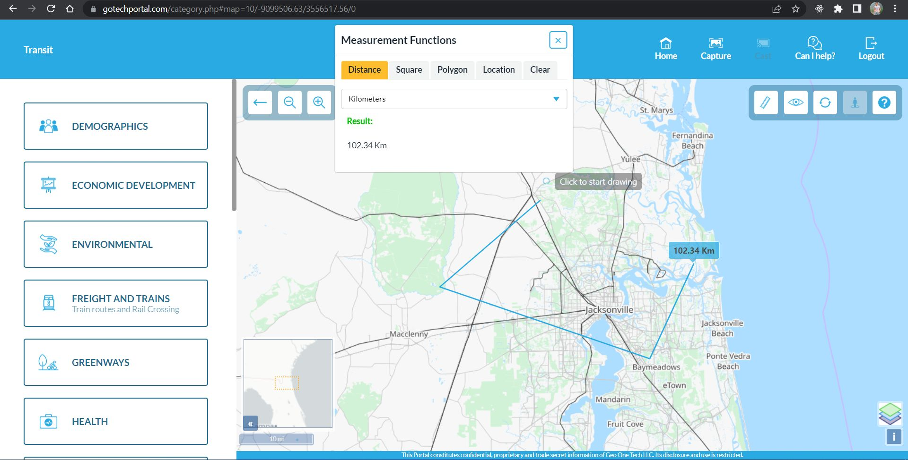
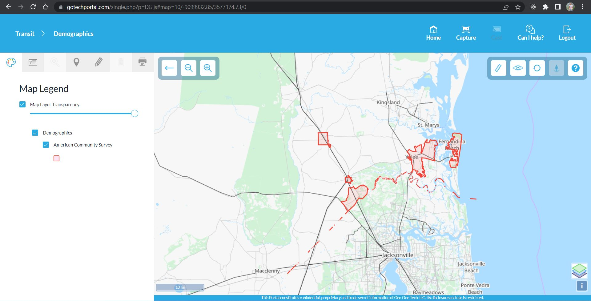
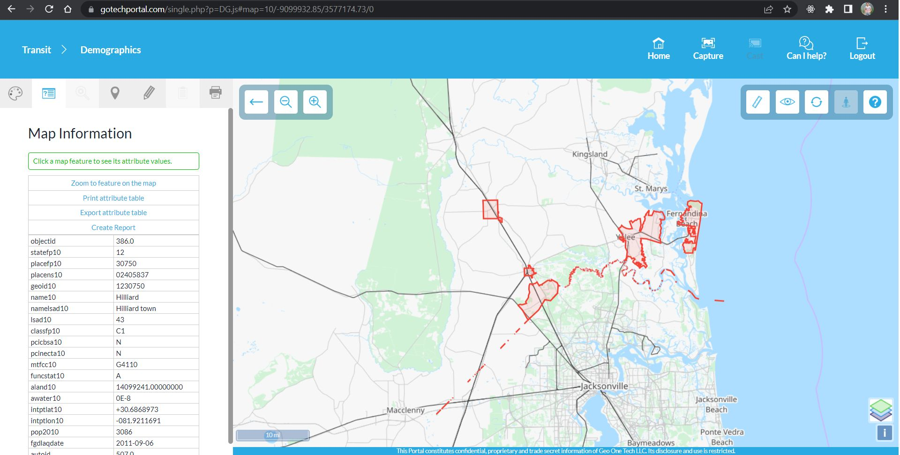
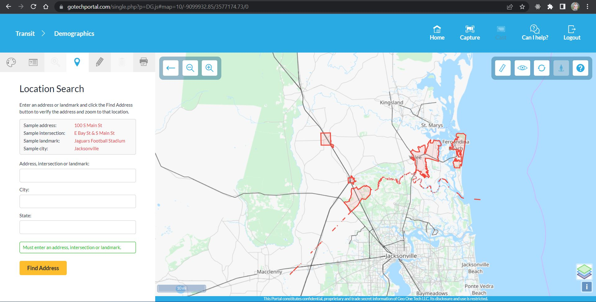
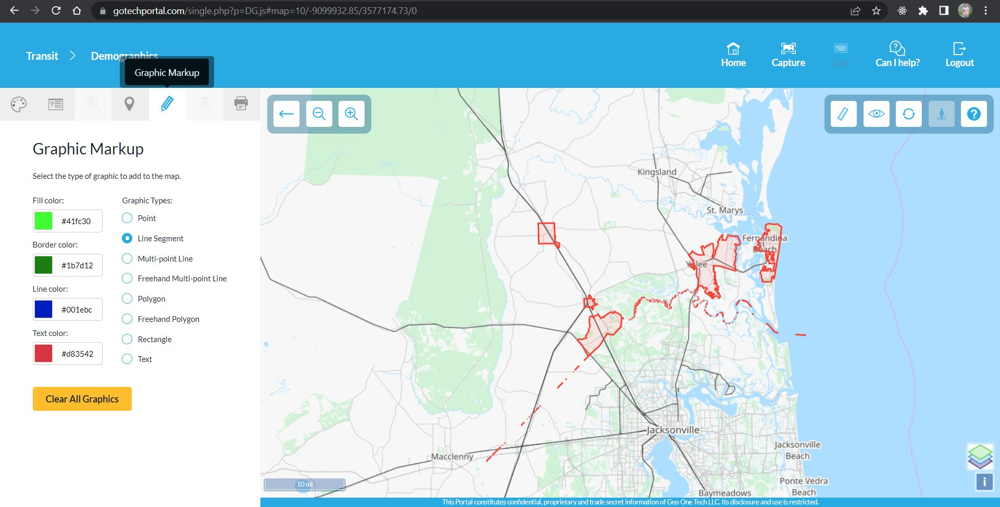
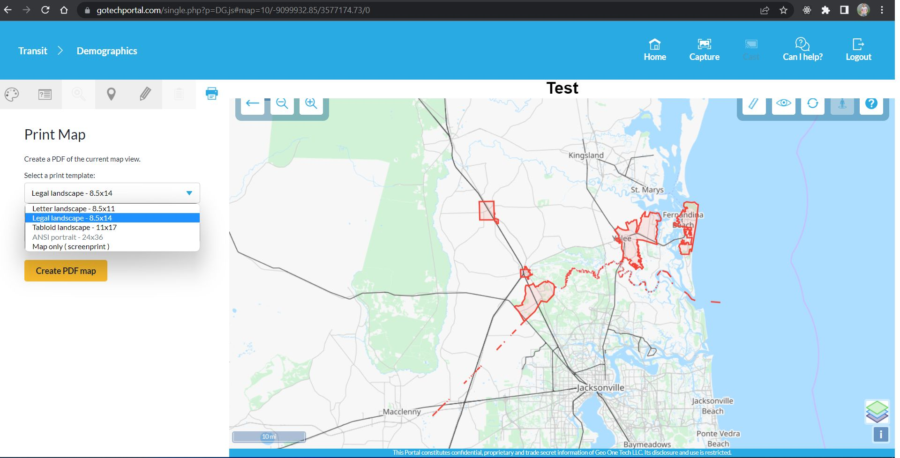

<div class="container">
    <div class="row topspace">
        <article class="col-sm-8 maincontent">
            <div class="your-class">
                <div></div>
                <div></div>
                <div></div>
                <div></div>
                <div></div>
                <div></div>
                <div></div>
                <div></div>
                <div></div>
                <div></div>
                <div></div>
            </div>
            <br>
            <p>In 2020, I won this project in my freelance career to build a map based GIS solution for manager &
                decision makers, which
                would allow socio-economic decisions to be done spatially.</p>
            <br>
            <p>Portal divides the information into multiple sub sections with customized layer panel allowing drag and
                drop, printing PDF based reports, drawing over the map and so on.</p>
            <br>
            <p>This was a freelance project that I won over Upwork as a freelancer and developed the portal from scratch
                to top & deployed it over AWS servers.</p>
        </article>
        <aside class="col-md-4 sidebar sidebar-left">
            <div class="widget">
                <ul class="list-group">
                    <li class="list-group-item pull-left">
                        <h4 class="custom-subsubheader">Freelance Project</h4>
                        <p><strong>2020</strong></p>
                        <p>Website (Login protected): <a href="https://gotechportal.com/" target="_blank">View</a></p>
                    </li>
                </ul>
            </div>
        </aside>
    </div>
</div>